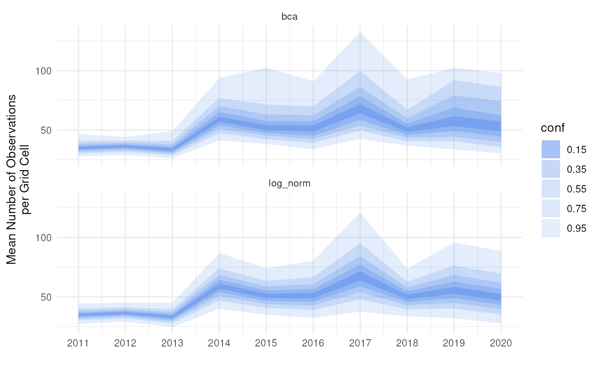

Visualising Temporal Trends
Source:vignettes/articles/visualising-temporal-trends.Rmd
visualising-temporal-trends.RmdIntroduction
This tutorial provides good practices regarding visualisation and interpretation of trends of indicators over time. The methods discussed here are more broadly applicable, be for this tutorial we focus on occurrence cubes from which biodiversity indicators are derived. For visualisation and interpretation, we strongly rely on the functionality and concepts of the effectclass package.
Calculating confidence intervals with dubicube
We reuse the example introduced in bootstrap confidence interval calculation tutorial where we calculate confidence limits for the mean number of observations per grid cell per year for birds in Belgium between 2011 en 2020 using the MGRS grid at 10 km scale.
# Load packages
library(ggplot2) # Data visualisation
library(dplyr) # Data wrangling
library(tidyr) # Data wrangling
# Data loading and processing
library(frictionless) # Load example datasets
library(b3gbi) # Process occurrence cubes
library(dubicube) # Analysis of data quality & indicator uncertaintyLoading and processing the data
We load the bird cube data from the b3data data package using frictionless (see also here).
# Read data package
b3data_package <- read_package(
"https://zenodo.org/records/15211029/files/datapackage.json"
)
# Load bird cube data
bird_cube_belgium <- read_resource(b3data_package, "bird_cube_belgium_mgrs10")
head(bird_cube_belgium)
#> # A tibble: 6 × 8
#> year mgrscode specieskey species family n mincoordinateuncerta…¹
#> <dbl> <chr> <dbl> <chr> <chr> <dbl> <dbl>
#> 1 2000 31UDS65 2473958 Perdix perdix Phasi… 1 3536
#> 2 2000 31UDS65 2474156 Coturnix coturn… Phasi… 1 3536
#> 3 2000 31UDS65 2474377 Fulica atra Ralli… 5 1000
#> 4 2000 31UDS65 2475443 Merops apiaster Merop… 6 1000
#> 5 2000 31UDS65 2480242 Vanellus vanell… Chara… 1 3536
#> 6 2000 31UDS65 2480637 Accipiter nisus Accip… 1 3536
#> # ℹ abbreviated name: ¹mincoordinateuncertaintyinmeters
#> # ℹ 1 more variable: familycount <dbl>We process the cube with b3gbi. First, we select 2000 random rows to make the dataset smaller. This is to reduce the computation time for this tutorial. We select the data from 2011 - 2020.
set.seed(123)
# Make dataset smaller
rows <- sample(nrow(bird_cube_belgium), 2000)
bird_cube_belgium <- bird_cube_belgium[rows, ]
# Process cube
processed_cube <- process_cube(
bird_cube_belgium,
first_year = 2011,
last_year = 2020,
cols_occurrences = "n"
)
processed_cube
#>
#> Processed data cube for calculating biodiversity indicators
#>
#> Date Range: 2011 - 2020
#> Single-resolution cube with cell size 10km ^2
#> Number of cells: 242
#> Grid reference system: mgrs
#> Coordinate range:
#> xmin xmax ymin ymax
#> 280000 710000 5490000 5700000
#>
#> Total number of observations: 45143
#> Number of species represented: 253
#> Number of families represented: 57
#>
#> Kingdoms represented: Data not present
#>
#> First 10 rows of data (use n = to show more):
#>
#> # A tibble: 957 × 13
#> year cellCode taxonKey scientificName family obs minCoordinateUncerta…¹
#> <dbl> <chr> <dbl> <chr> <chr> <dbl> <dbl>
#> 1 2011 31UFS56 5231918 Cuculus canorus Cucul… 11 3536
#> 2 2011 31UES28 5739317 Phoenicurus phoe… Musci… 6 3536
#> 3 2011 31UFS64 6065824 Chroicocephalus … Larid… 143 1000
#> 4 2011 31UFS96 2492576 Muscicapa striata Musci… 3 3536
#> 5 2011 31UES04 5231198 Passer montanus Passe… 1 3536
#> 6 2011 31UES85 5229493 Garrulus glandar… Corvi… 23 707
#> 7 2011 31UES88 10124612 Anser anser x Br… Anati… 1 100
#> 8 2011 31UES22 2481172 Larus marinus Larid… 8 1000
#> 9 2011 31UFS43 2481139 Larus argentatus Larid… 10 3536
#> 10 2011 31UFT00 9274012 Spatula querqued… Anati… 8 3536
#> # ℹ 947 more rows
#> # ℹ abbreviated name: ¹minCoordinateUncertaintyInMeters
#> # ℹ 6 more variables: familyCount <dbl>, xcoord <dbl>, ycoord <dbl>,
#> # utmzone <int>, hemisphere <chr>, resolution <chr>Analysis of the data
Let’s say we are interested in the mean number of observations per grid cell per year. We create a function to calculate this.
# Function to calculate statistic of interest
# Mean observations per grid cell per year
mean_obs <- function(data) {
data %>%
dplyr::mutate(x = mean(obs), .by = "cellCode") %>%
dplyr::summarise(diversity_val = mean(x), .by = "year") %>%
as.data.frame()
}We get the following results:
mean_obs(processed_cube$data)
#> year diversity_val
#> 1 2011 34.17777
#> 2 2012 35.27201
#> 3 2013 33.25581
#> 4 2014 55.44160
#> 5 2015 49.24754
#> 6 2016 48.34063
#> 7 2017 70.42202
#> 8 2018 48.83850
#> 9 2019 47.46795
#> 10 2020 43.00411On their own, these values don’t reveal how much uncertainty surrounds them. To better understand their variability, we use bootstrapping to estimate the distribution of the yearly means. From this, we can calculate bootstrap confidence intervals.
Bootstrapping
We use the bootstrap_cube() function to perform
bootstrapping (see also the bootstrap
tutorial).
bootstrap_results <- bootstrap_cube(
data_cube = processed_cube,
fun = mean_obs,
grouping_var = "year",
samples = 1000,
seed = 123
)
#> [1] "Performing whole-cube bootstrap with `boot::boot()`."Interval calculation
Now we can use the calculate_bootstrap_ci() function to
calculate confidence limits (see also the bootstrap
confidence interval calculation tutorial). We get a warning message
for BCa calculation because we are using a relatively small dataset.
ci_mean_obs <- calculate_bootstrap_ci(
bootstrap_samples_df = bootstrap_results,
grouping_var = "year",
type = c("perc", "bca", "norm", "basic"),
conf = 0.95
)
#> Warning in norm.inter(t, adj.alpha): extreme order statistics used as endpoints
# Make interval type factor
ci_mean_obs <- ci_mean_obs %>%
mutate(
year = as.numeric(year),
int_type = factor(
int_type, levels = c("perc", "bca", "norm", "basic")
)
)
head(ci_mean_obs)
#> year est_original int_type ll ul conf
#> 1 2011 34.17777 norm 26.20924 43.08325 0.95
#> 2 2011 34.17777 basic 24.99408 42.17612 0.95
#> 3 2011 34.17777 perc 26.17942 43.36146 0.95
#> 4 2011 34.17777 bca 27.43845 45.60900 0.95
#> 5 2012 35.27201 norm 28.62332 43.67756 0.95
#> 6 2012 35.27201 basic 28.26708 43.07078 0.95Visualising uncertainty in temporal trends
Error bars
The use of error bars is an easy and straightforward way to visualise uncertainty around indicator estimates.
ci_mean_obs %>%
ggplot(aes(x = year, y = est_original)) +
# Intervals
geom_errorbar(aes(ymin = ll, ymax = ul),
position = position_dodge(0.8), linewidth = 0.8) +
# Estimates
geom_point(colour = "firebrick", size = 2) +
# Settings
labs(y = "Mean Number of Observations\nper Grid Cell") +
scale_x_continuous(breaks = sort(unique(bootstrap_results$year))) +
theme_minimal() +
facet_wrap(~int_type)
However, the question remains which interval types should be calculated and/or reported. A good idea is to compare different interval types next to each other together with the bootstrap distribution and the bootstrap bias (the difference between the estimate and the bootstrap estimate).
# Convert bootstrap replicates to dataframe
bootstrap_results_df <- boot_list_to_dataframe(
boot_list = bootstrap_results,
grouping_var = "year"
) %>%
mutate(year = as.numeric(year))
# Get bias vales
bias_mean_obs <- bootstrap_results_df %>%
distinct(year, estimate = est_original, `bootstrap estimate` = est_boot)
# Get estimate values
estimate_mean_obs <- bias_mean_obs %>%
pivot_longer(cols = c("estimate", "bootstrap estimate"),
names_to = "Legend", values_to = "value") %>%
mutate(Legend = factor(Legend, levels = c("estimate", "bootstrap estimate"),
ordered = TRUE))
# Visualise
bootstrap_results_df %>%
ggplot(aes(x = year)) +
# Distribution
geom_violin(aes(y = rep_boot, group = year),
fill = alpha("cornflowerblue", 0.2)) +
# Estimates and bias
geom_point(data = estimate_mean_obs, aes(y = value, shape = Legend),
colour = "firebrick", size = 2, alpha = 0.5) +
# Intervals
geom_errorbar(data = ci_mean_obs,
aes(ymin = ll, ymax = ul, colour = int_type),
position = position_dodge(0.8), linewidth = 0.6) +
# Settings
labs(y = "Mean Number of Observations\nper Grid Cell",
x = "", shape = "Legend:", colour = "Interval type:") +
scale_x_continuous(breaks = sort(unique(bootstrap_results_df$year))) +
theme_minimal() +
theme(legend.position = "bottom",
legend.title = element_text(face = "bold"))
#> Warning: Using shapes for an ordinal variable is not advisedThis informs us about the shape of the bootstrap distribution and the amount of bootstrap bias. In combination with bootstrap interval theory, it can be decided which interval type(s) should be reported. In general, because of the wide range of biodiversity indicator types, we recommend the use of percentile or BCa intervals, because they have no strong assumptions regarding the bootstrap distribution. The BCa interval is recommended as it accounts for bias and skewness. However, due to the jackknife estimation of the acceleration parameter, the calculation time is significantly longer. The use of the normal and basic confidence intervals is not recommended, but could be used in combination with truncations or transformations. The assumption of normality can be checked by making a Q-Q plot of the bootstrap replications (see further) (Davison & Hinkley, 1997). An overview of the recommendations is provided in the table below. This is not an exhaustive review of the topic, but based on existing literature and our preliminary results, these recommendations provide a useful starting point for selecting appropriate interval types.
| Interval type | Advantages | Disadvantages | References |
|---|---|---|---|
| Normal |
|
|
Davison & Hinkley
(1997, Ch.
5); Efron & Tibshirani (1994, Ch. 13); Hesterberg (2015) |
| Basic |
|
|
Carpenter & Bithell
(2000); Davison & Hinkley (1997, Ch. 5); Hesterberg (2015) |
| Percentile |
|
|
Carpenter & Bithell
(2000); Davison & Hinkley (1997, Ch. 5); Efron & Tibshirani (1994, Ch. 13) |
| BCa |
|
|
Carpenter & Bithell
(2000); Davison & Hinkley (1997, Ch. 5); Dixon (2000); Efron & Tibshirani (1994, Ch. 14) |
Smooth trends
To create a more continuous representation of change over time, we can apply LOESS (Locally Estimated Scatterplot Smoothing) to the estimates and confidence limits. This smoothing technique fits local regressions across subsets of the data, producing a flexible trend line that helps visualize broader patterns while retaining important details.
It should be noted that this may complicate interpretation of the results. Occurrence cubes are by definition categorical over time (in this case by year), so smoothing things out over time while the data have been aggregated might lead to different results compared to a similar analysis on the original data (before the cube was made and aggregation occurred). Therefore, we recommend this visualisation for long time series to make general interpretations of the trend over time. In our example, we actually have a small time frame so we only show this for the sake of the tutorial.
Based on the discussion above, we select the BCa interval as we see some asymmetry and bias in the bootstrap distribution of later years. Note that this is probably due to the selection 2000 random rows from the original dataset to reduce the computation time for this tutorial. Otherwise we would expect a more symmetrical distribution for this indicator.
ci_mean_obs %>%
filter(int_type == "bca") %>%
ggplot(aes(x = year, y = est_original)) +
geom_smooth(
colour = alpha("blue", 0.5),
linetype = "solid",
method = "loess",
formula = "y ~ x",
se = FALSE
) +
geom_smooth(
aes(y = ul),
colour = alpha("lightsteelblue1", 1),
linetype = "dashed",
method = "loess",
formula = "y ~ x",
se = FALSE
) +
geom_smooth(
aes(y = ll),
colour = alpha("lightsteelblue1", 1),
linetype = "dashed",
method = "loess",
formula = "y ~ x",
se = FALSE
) +
geom_ribbon(
aes(ymin = predict(loess(ll ~ year)), ymax = predict(loess(ul ~ year))),
alpha = 0.2, fill = "lightsteelblue1"
) +
# Intervals
geom_errorbar(aes(ymin = ll, ymax = ul),
position = position_dodge(0.8), linewidth = 0.8) +
# Estimates
geom_point(colour = "firebrick", size = 3) +
# Settings
labs(y = "Mean Number of Observations\nper Grid Cell") +
scale_x_continuous(breaks = sort(unique(bootstrap_results$year))) +
theme_minimal()Fan plots
The effectclass package provides the
stat_fan() function to create fan plot intervals (see also
this effectclass
tutorial).
These intervals are based on a normal distribution or a
transformation via the link argument. Therefore, we check
the assumption of normality by making a Q-Q plot of the bootstrap
replications.
ggplot(bootstrap_results_df, aes(sample = rep_boot)) +
# Q-Q plot
stat_qq() +
stat_qq_line(col = "red") +
# Settings
labs(x = "Theoretical Quantiles (Standard Normal)",
y = "Sample Quantiles (Bootstrap Replicates)") +
facet_wrap(~ year, ncol = 2, scales = "free") +
theme_minimal()
As expected, it looks like the bootstrap distributions are not normally distributed in most years. If we log-transform the bootstrap replications, the Q-Q plots look better.
ggplot(bootstrap_results_df, aes(sample = log(rep_boot))) +
# Q-Q plot
stat_qq() +
stat_qq_line(col = "red") +
# Settings
labs(x = "Theoretical Quantiles (Standard Normal)",
y = "Sample Quantiles (Bootstrap Replicates)") +
facet_wrap(~ year, ncol = 2, scales = "free") +
theme_minimal()We therefore calculate the log-transformed normal intervals and compare them with the BCa and normal intervals.
ci_mean_obs_lognorm <- calculate_bootstrap_ci(
bootstrap_samples_df = bootstrap_results,
grouping_var = "year",
type = c("norm"),
conf = 0.95,
h = log,
hinv = exp
)The log-normal intervals look indeed more correct then the normal intervals, although they still differ from the BCa intervals.
# Combine interval data
ci_mean_obs_new <- ci_mean_obs %>%
filter(int_type %in% c("bca", "norm")) %>%
bind_rows(
ci_mean_obs_lognorm %>%
mutate(year = as.numeric(year),
int_type = "log_norm")
)
# Visualise
bootstrap_results_df %>%
ggplot(aes(x = year)) +
# Distribution
geom_violin(aes(y = rep_boot, group = year),
fill = alpha("cornflowerblue", 0.2)) +
# Estimates and bias
geom_point(data = estimate_mean_obs, aes(y = value, shape = Legend),
colour = "firebrick", size = 2, alpha = 0.5) +
# Intervals
geom_errorbar(data = ci_mean_obs_new,
aes(ymin = ll, ymax = ul, colour = int_type),
position = position_dodge(0.8), linewidth = 0.6) +
# Settings
labs(y = "Mean Number of Observations\nper Grid Cell",
x = "", shape = "Legend:", colour = "Interval type:") +
scale_x_continuous(breaks = sort(unique(bootstrap_results$year))) +
theme_minimal() +
theme(legend.position = "bottom",
legend.title = element_text(face = "bold"))
Finally, we can create a fan plot assuming the log-normal
distribution. Note that for stat_fan(), the
link_sd is the standard error on the link scale, while
y is on the natural scale. So we have to recalculate the
standard error on the log-transformed bootstrap replicates. We also need
to account for bias. As noted in the previous section, year is a
discrete variable in our data cube. We therefore use the
geom = "rect" option.
bootstrap_results_df %>%
# Calculate standard error on link scale
mutate(rep_boot_log = log(rep_boot),
est_boot_log = mean(rep_boot_log), # Needed for bias calculation
se_boot_log = sd(rep_boot_log),
.by = "year") %>%
# Get unique estimates per year
distinct(year, est_original, est_boot_log, se_boot_log) %>%
# Calculate bias factor
mutate(bias_log = exp(est_boot_log - log(est_original))) %>%
# Visualise
ggplot(aes(x = year)) +
effectclass::stat_fan(
aes(y = est_original / bias_log, link_sd = se_boot_log),
link = "log", fill = "cornflowerblue", max_prob = 0.95,
geom = "rect"
) +
# Settings
labs(y = "Mean Number of Observations\nper Grid Cell", x = "") +
scale_x_continuous(breaks = sort(unique(bootstrap_results$year))) +
theme_minimal()We can make use of this concept to make fan plots for other interval types ourselves. We calculate BCA and log-normal intervals for five coverages using a for loop.
# Set up coverage levels
max_prob <- 0.95
step <- 0.2
coverages <- seq(max_prob, 1e-3, by = -step)
# Loop over coverages
out_ci_list <- vector(mode = "list", length = length(coverages))
for (i in seq_along(coverages)) {
cov <- coverages[i]
# Calculate confidence limits for confidence level
ci_cov <- calculate_bootstrap_ci(
bootstrap_samples_df = bootstrap_results,
grouping_var = "year",
type = c("bca", "norm"),
conf = cov,
h = log,
hinv = exp
)
out_ci_list[[i]] <- ci_cov
}
out_ci <- bind_rows(out_ci_list) %>%
mutate(
year = as.numeric(year),
int_type = ifelse(int_type == "norm", "log_norm", int_type)
)We can visualise this in a categorical way with
geom_rect() from ggplot2.
# For visualisation of envelopes
alpha_levels <- sapply(coverages, function(i) 1 - i / (i + step))
names(alpha_levels) <- as.character(coverages)
# Convert conf to character so it can match alpha_levels
out_ci <- out_ci %>%
mutate(
conf_chr = as.character(conf),
year_num = as.numeric(as.factor(year)) # Numeric year for xmin/xmax
)
# Visualise
bar_width <- 0.9
ggplot(out_ci, aes()) +
geom_rect(
aes(
xmin = year_num - bar_width / 2,
xmax = year_num + bar_width / 2,
ymin = ll,
ymax = ul,
fill = conf_chr,
alpha = conf_chr
)
) +
# Colour ribbons
scale_alpha_manual(values = alpha_levels, name = "conf") +
scale_fill_manual(values = rep("cornflowerblue", length(alpha_levels)),
name = "conf") +
# Settings
labs(y = "Mean Number of Observations\nper Grid Cell", x = "") +
scale_x_continuous(
breaks = unique(out_ci$year_num),
labels = unique(out_ci$year)
) +
facet_wrap(~int_type, ncol = 1) +
theme_minimal()
We can visualise this in a continuous way with
geom_ribbon() from ggplot2. Linear (like
the default of stat_fan()):
ggplot(out_ci, aes(x = year)) +
geom_ribbon(aes(ymin = ll, ymax = ul, fill = conf_chr, alpha = conf_chr)) +
# Colour ribbons
scale_alpha_manual(values = alpha_levels, name = "conf") +
scale_fill_manual(values = rep("cornflowerblue", length(alpha_levels)),
name = "conf") +
# Settings
labs(y = "Mean Number of Observations\nper Grid Cell", x = "") +
scale_x_continuous(breaks = sort(unique(bootstrap_results$year))) +
facet_wrap(~int_type, ncol = 1) +
theme_minimal()Smooth (like in the previous paragraph):
# Predict smooth ymin/ymax
out_ci %>%
group_by(conf_chr, int_type) %>%
mutate(ymin = predict(loess(ll ~ year)),
ymax = predict(loess(ul ~ year))) %>%
ungroup() %>%
# Visualise
ggplot(aes(x = year)) +
geom_ribbon(
aes(ymin = ymin, ymax = ymax, fill = conf_chr, alpha = conf_chr)
) +
# Colour ribbons
scale_alpha_manual(values = alpha_levels, name = "conf") +
scale_fill_manual(values = rep("cornflowerblue", length(alpha_levels)),
name = "conf") +
# Settings
labs(y = "Mean Number of Observations\nper Grid Cell", x = "") +
scale_x_continuous(breaks = sort(unique(bootstrap_results$year))) +
facet_wrap(~int_type, ncol = 1) +
theme_minimal()
Visualising temporal effects
In this tutorial, we demonstrated how to classify effect sizes based on confidence intervals. Here we give some visualisation options based on the effectclass package (see also this effectclass tutorial).
Let’s calculate the BCa interval for the mean number of observations per grid cell compared to 2011 and perform effect classification with threshold 5.
# Bootstrapping
bootstrap_results_ref <- bootstrap_cube(
data_cube = processed_cube,
fun = mean_obs,
grouping_var = "year",
samples = 1000,
ref_group = 2011,
seed = 123
)
#> [1] "Performing whole-cube bootstrap."
# Calculate confidence intervals
ci_mean_obs_ref <- calculate_bootstrap_ci(
bootstrap_samples_df = bootstrap_results_ref,
grouping_var = "year",
type = "bca",
data_cube = processed_cube, # Required for BCa
fun = mean_obs, # Required for BCa
ref_group = 2011 # Required for BCa
)
#> Warning in norm_inter(h(t), adj_alpha): Extreme order statistics used as
#> endpoints.
#> Warning in norm_inter(h(t), adj_alpha): Extreme order statistics used as
#> endpoints.
# Perform effect classification
result <- add_effect_classification(
df = ci_mean_obs_ref,
cl_columns = c("ll", "ul"),
threshold = 5,
reference = 0
)
# View the result
result
#> year est_original est_boot se_boot bias_boot int_type conf ll
#> 1 2012 1.0942452 0.65831911 5.475053 -0.4359261 bca 0.95 -10.7621638
#> 2 2013 -0.9219589 -0.07108256 6.690590 0.8508764 bca 0.95 -12.8513851
#> 3 2014 21.2638321 19.32958556 10.982093 -1.9342466 bca 0.95 5.8187198
#> 4 2015 15.0697689 14.80578656 10.723767 -0.2639823 bca 0.95 2.5039329
#> 5 2016 14.1628569 13.30622198 12.131657 -0.8566350 bca 0.95 -1.7552656
#> 6 2017 36.2442462 43.13141123 23.943155 6.8871650 bca 0.95 7.1906529
#> 7 2018 14.6607335 14.98367972 10.715491 0.3229462 bca 0.95 0.3961534
#> 8 2019 13.2901788 8.46222485 13.048145 -4.8279539 bca 0.95 -0.5622564
#> 9 2020 8.8263369 5.37019562 13.084703 -3.4561413 bca 0.95 -5.3273172
#> ul effect_code effect_code_coarse effect effect_coarse
#> 1 11.04344 ? ? unknown unknown
#> 2 13.06589 ? ? unknown unknown
#> 3 57.17064 ++ + strong increase increase
#> 4 58.08685 + + increase increase
#> 5 52.49345 ?+ ? potential increase unknown
#> 6 96.55713 ++ + strong increase increase
#> 7 48.95507 + + increase increase
#> 8 69.67581 ?+ ? potential increase unknown
#> 9 65.47783 ? ? unknown unknownThe effectclass package provides the
stat_effect() function that visualises the effects with
colours and symbols.
ggplot(data = result, aes(x = year, y = est_original, ymin = ll, ymax = ul)) +
effectclass::stat_effect(reference = 0, threshold = 5) +
# Settings
labs(y = "Mean Number of Observations\nper Grid Cell Compared to 2011",
x = "") +
scale_x_continuous(breaks = sort(unique(result$year))) +
theme_minimal()
With this function, you can also add symbols to
stat_fan().
Note that the choice of the reference year should be well considered. Keep in mind which comparisons should be made, and what the motivation is behind the reference period. A high or low value in the reference period relative to other periods, e.g. an exceptional bad or good year, can affect the magnitude and direction of the calculated differences. Whether this should be avoided or not, depends on the motivation behind the choice and the research question. A reference period can be determined by legislation, or by the start of a monitoring campaign. A specific research question can determine the periods that need to be compared. Furthermore, the variability of the estimate of reference period affects the width of confidence intervals for the differences. A more variable reference period will propagate greater uncertainty. In the case of GBIF data, more data will be available in recent years than in earlier years. If this is the case, it could make sense to select the last period as a reference period. In a way, this also avoids the arbitrariness of choice for the reference period. You compare previous situations with the current situation (last year), where you could repeat this comparison annually, for example. Finally, when comparing multiple indicators, we recommend using a consistent reference period to maintain comparability
References
Carpenter, J., & Bithell, J. (2000). Bootstrap confidence intervals: When, which, what? A practical guide for medical statisticians. Statistics in Medicine, 19(9), 1141–1164. https://doi.org/10.1002/(SICI)1097-0258(20000515)19:9<1141::AID-SIM479>3.0.CO;2-F
Davison, A. C., & Hinkley, D. V. (1997). Bootstrap Methods and their Application (1st ed.). Cambridge University Press. https://doi.org/10.1017/CBO9780511802843
Dixon, P. M. (2001). The Bootstrap and the Jackknife: Describing the Precision of Ecological Indices. In S. M. Scheiner & J. Gurevitch (Eds.), Design and Analysis of Ecological Experiments (Second Edition, pp. 267–288). Oxford University PressNew York, NY. https://doi.org/10.1093/oso/9780195131871.003.0014
Efron, B., & Tibshirani, R. J. (1994). An Introduction to the Bootstrap (1st ed.). Chapman and Hall/CRC. https://doi.org/10.1201/9780429246593
Hesterberg, T. C. (2015). What Teachers Should Know About the Bootstrap: Resampling in the Undergraduate Statistics Curriculum. The American Statistician, 69(4), 371–386. https://doi.org/10.1080/00031305.2015.1089789